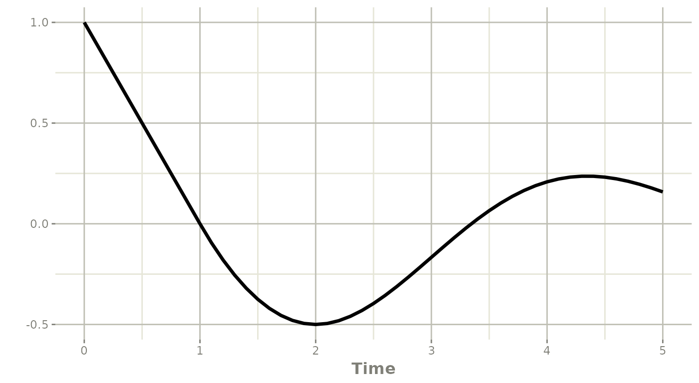
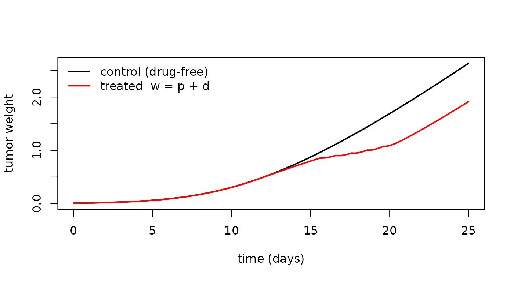
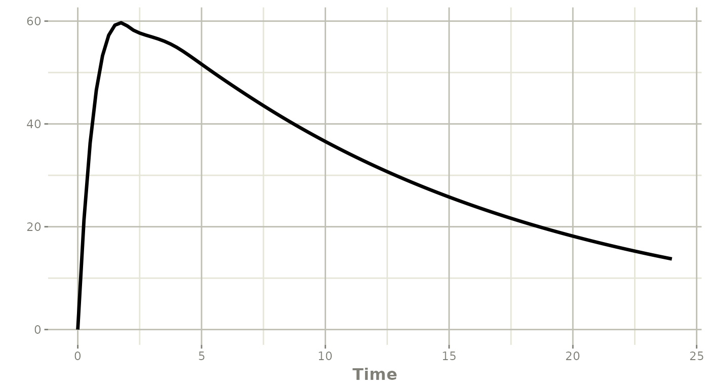
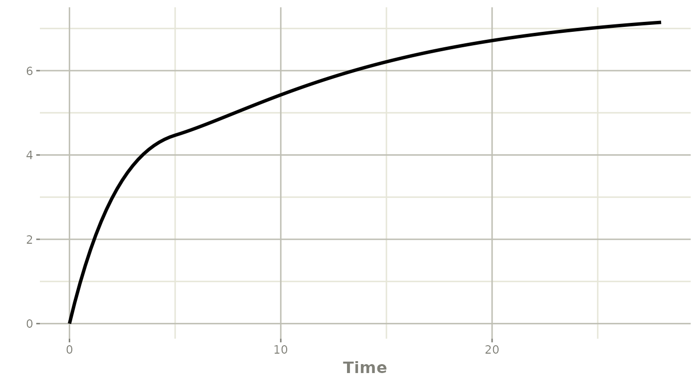

Delay Differential Equations in rxode2
2026-07-24
Source:vignettes/articles/rxode2-delay-differential-equations.Rmd
rxode2-delay-differential-equations.RmdWhat is a delay differential equation?
An ordinary differential equation (ODE) describes how a system
changes based on its current state. A delay
differential equation (DDE) lets the rate of change also depend
on a past state – the system at time t - T. Delays
arise naturally in pharmacometrics (signaling and maturation delays,
delayed feedback, transit-like absorption) and in ecology, physiology
and control.
In rxode2 a delayed state is written with
delay(state, T), which evaluates the ODE compartment
state at the earlier time t - T. The semantics
match the delay() function of Monolix.
The pharmacodynamic examples in this article (Examples 2 and 6) are taken from the review by Koch, Krzyzanski, Perez-Ruixo and Schropp, Modeling of delays in PKPD: classification of delays and mathematical properties (J Pharmacokinet Pharmacodyn, 2014; see References), which classifies delay models in pharmacometrics and gives the equations we reproduce below.
A first example
The classic linear DDE
is written directly:
dde <- function() {
model({
y(0) <- 1
d/dt(y) <- -delay(y, 1)
})
}
s <- rxSolve(dde, et(seq(0, 5, by = 0.1)))
#> [====|====|====|====|====|====|====|====|====|====] 0:00:00Before the start of integration (t <= 0 here) the
history is the constant initial condition, y = 1. After
that, the solution is built by the solver. We can check it against the
exact “method of steps” solution, which is piecewise polynomial:
exact <- function(t) {
ifelse(t <= 1, 1 - t, t^2 / 2 - 2 * t + 3 / 2)
}
max(abs(s$y[s$time <= 2] - exact(s$time[s$time <= 2])))
#> [1] 6.661338e-16The agreement is at machine precision.
plot(s, y)
How delays use dense output
The key numerical challenge is that delay(y, T) needs
the solution at a past time t - T that is, in general,
not one of the solver’s step boundaries or one of your
observation times. rxode2 answers this the same way it
speeds up dense-grid solving (see the companion article Dense output for fast dense-grid
solves): every accepted step records the dense-output
polynomial that continuously interpolates the solution across
that step.
For delay differential equations these polynomials are kept in a
per-subject history buffer as the integration advances. When the model
evaluates delay(y, T), rxode2:
- finds the recorded step that brackets the past time
t - T, and - evaluates that step’s dense polynomial at
t - T.
Because this is the same interpolant the integrator uses for its own
output, the delayed value is obtained to the full order of the
method – an 8th-order Dormand-Prince interpolant for
dop853, and a cubic Rosenbrock interpolant for
ros4.
This has a few practical consequences, all handled automatically:
-
Delay models are solved on a dense path. When a model uses
delay(),rxode2enables dense output and switches the default method to the dense AutoSwitch composite"dop853+ros4". A non-dense method (for examplelsoda) cannot record the history and raises an error: Non-stiff and stiff regions are both handled. The composite probes with the explicit
dop853and falls back per segment to the implicit Rosenbrockros4when a region turns stiff, so a delay model that is non-stiff in one region and stiff in another is solved efficiently in a single pass. A purely stiff delay model can also be solved withmethod = "ros4"directly.The step size is capped to the smallest delay. This keeps the lagged time
t - Tinside already-recorded history (rather than extrapolating off the current, not-yet-finished step), so short delays stay accurate.Only the delayed states are recorded. History is stored only for the compartments that some
delay()actually looks back on, so a delay on one state in a large ODE system stays inexpensive.
You can still request a specific dense solver explicitly;
method = "dop853" (pure 8th-order) and
method = "ros4" (stiff) both work.
Example 2: a lifespan-based tumor-growth model
A more clinically relevant use of delay() is Koch et
al.’s lifespan based tumor-growth model (their Example
2), a delay reformulation of the Simeoni tumor-growth model. Drug
concentration c(t) (a one -compartment oral PK model)
drives proliferating tumor cells p = x4 into an apoptotic
pool x5; apoptotic cells live for a fixed lifespan
Td, so cells that entered the pool one lifespan ago –
delay(x4, Td) – leave it. A drug-free control
x3 grows in parallel:
ex2 <- function() {
ini({
ka <- 103.96 * 24
ke <- 0.1052 * 24
V <- 2.7882
l0 <- 0.195
l1 <- 0.245
w0 <- 0.010
kpot <- 0.007
Td <- 3.61 # apoptotic-cell lifespan (the delay)
})
model({
## one-compartment oral PK -> concentration c(t)
d/dt(x1) <- -ka * x1
d/dt(x2) <- ka * x1 - ke * x2
c <- x2 / V
cdel <- delay(x2, Td) / V # c(t - Td)
## lifespan tumor growth: x4 = proliferating p(t), x5 = apoptotic d(t)
d/dt(x3) <- (2 * l0 * l1 * x3) / (l1 + 2 * l0 * x3) # drug-free control
d/dt(x4) <- (2 * l0 * l1 * x4^2) / ((l1 + 2 * l0 * x4) * (x4 + x5)) - kpot * c * x4
d/dt(x5) <- kpot * c * x4 - kpot * cdel * delay(x4, Td)
w <- x4 + x5 # observed treated tumor weight
x3(0) <- w0
x4(0) <- w0
x5(0) <- 0
})
}
## 100 mg orally at days 12-16, observe the tumor for 25 days
ev <- et(seq(0, 25, by = 0.1)) |> et(amt = 100, time = 12:16, cmt = "x1")
s2 <- rxSolve(ex2, ev)
#> [====|====|====|====|====|====|====|====|====|====] 0:00:00
plot(s2$time, s2$x3, type = "l", lwd = 2, xlab = "time (days)",
ylab = "tumor weight", ylim = c(0, max(s2$x3)))
lines(s2$time, s2$w, lwd = 2, col = "red")
legend("topleft", c("control (drug-free)", "treated w = p + d"),
col = c("black", "red"), lwd = 2, bty = "n")
The treated tumor is suppressed by the dosing and then regrows once
the drug washes out, while the drug-free control grows monotonically –
the signature of the Simeoni model. Note the two
delay(., Td) terms share one estimated lifespan
Td, and the delay duration is a model parameter rather than
a constant.
The delay duration T is an arbitrary model expression –
it can be a constant, a parameter, or a covariate – and a model may use
several delay() terms, on the same state or on different
states, each with its own delay.
Delays mixed with ordinary states
delay() composes freely with ordinary ODE compartments,
dosing, and covariates. Here a depot feeds a central compartment that
has a delayed auto-induction-like feedback term:
mix <- function() {
ini({
ka <- 1
ke <- 0.3
kin <- 0.2
})
model({
cen(0) <- 0
d/dt(depot) <- -ka * depot
d/dt(cen) <- ka * depot - ke * cen + kin * delay(cen, 2)
})
}
ev <- et(amt = 100, cmt = "depot") |> et(seq(0, 24, by = 0.25))
s3 <- rxSolve(mix, ev)
#> [====|====|====|====|====|====|====|====|====|====] 0:00:00
plot(s3, cen)
Example 6: a non-constant history with past()
By default the pre-history of a delayed state (its value for
t <= t0) is the constant initial condition. Some
published models instead need a non-constant history
function. Koch et al.’s Example 6 is a rheumatoid-arthritis
model in which the cytokine GM-CSF G(t) is already being
over-produced during an induction phase before the observation
window, so its past is the exponential
G(t) = a * exp(b * t) on the interval [-T, 0].
The strongly delayed ankylosis score is driven by
delay(G, T), which during the early response reaches back
into that induction-phase history.
rxode2 provides this with a
past(state, T) <- expr line, giving the value of
state for times before t0. It must reference
the same delay duration used in the matching
delay(state, T):
ra <- function() {
ini({
a <- 2 # induction-phase amplitude
b <- -0.25 # induction-phase rate
Td <- 5 # delay
k3 <- 1
kg <- 0.4
k4 <- 0.3
k5 <- 0.1
})
model({
G(0) <- a # continuity: a*exp(0) = a
d/dt(G) <- k3 - kg * G # development-phase cytokine turnover
past(G, Td) <- a * exp(b * t) # induction-phase history (Koch Eq. 63)
I(0) <- 0
d/dt(I) <- k4 * G - k4 * delay(G, Td) # inflammation
D(0) <- 0
d/dt(D) <- k4 * delay(G, Td) - k5 * D # bone destruction
R1 <- I + D # total arthritic score (TAS)
R2 <- D # ankylosis score (AKS)
})
}
ev6 <- et(seq(0, 28, by = 0.25))
sra <- rxSolve(ra, ev6)
#> [====|====|====|====|====|====|====|====|====|====] 0:00:00
plot(sra, R2)
The past() history and the initial condition must agree
at t0 (here G(0) = a, which equals
a * exp(b * 0)), so the delayed state is continuous. Using
the ordinary constant-history default here would hold
delay(G, Td) at G(0) and leave the ankylosis
score flat until t = Td, missing the induction-phase-driven
early response entirely – which is exactly why this class of models
needs a non-constant past.
Estimation with nlmixr2 (sensitivities)
Gradient-based estimation (such as the FOCEi family in
nlmixr2) needs the sensitivities of the model with respect
to the estimated parameters. rxode2 generates these for
delay models too: the forward-sensitivity equations gain the delayed
term delay(S, T) (the sensitivity of the delayed state),
which reuses exactly the same dense history machinery described above.
Delay durations that themselves depend on an estimated parameter are
also supported. When a model has a non-constant past()
history, the sensitivity of that history with respect to each estimated
parameter is carried into the pre-history of the corresponding
sensitivity state, so the gradient (and analytic Hessian) stay exact –
for instance the a and b in Example 6’s
past(G, Td) <- a * exp(b * t) are estimable. As a
result, a delay model built with the function interface can
be fit like any other nlmixr2 model.
Notes and attribution
- Use
delay(state, T)inside ad/dt()right-hand side. The first argument must be an ODE state (compartment) defined in the model; the second is the delay duration. - Use
past(state, T) <- exprto give a delayed state a non-constant pre-history (its value fort <= t0);expris a function oftand the model parameters,Tmust match the state’sdelay(state, T), andexpratt0should equal the state’s initial condition. Without apast()line the history is the constant initial condition. - The default solving method for delay models is the dense AutoSwitch
composite
"dop853+ros4";"dop853"and"ros4"may be requested explicitly. Methods that cannot record dense history error out. - The dense-output and delay-history machinery is adapted from the
ddepackage by Rich FitzJohn and Wes Hinsley (Imperial College of Science, Technology and Medicine), following the dense-output approach of Hairer, Norsett and Wanner.
See also the function reference for ?delay and the
companion article Dense output for
fast dense-grid solves.
References
- Koch G, Krzyzanski W, Perez-Ruixo JJ, Schropp J. Modeling of delays in PKPD: classification of delays and mathematical properties. J Pharmacokinet Pharmacodyn. 2014;41(4):291-318. doi:10.1007/s10928-014-9368-y. (Examples 2 and 6 above.)
- Simeoni M, Magni P, Cammia C, De Nicolao G, Croci V, Pesenti E, Germani M, Poggesi I, Rocchetti M. Predictive pharmacokinetic -pharmacodynamic modeling of tumor growth kinetics in xenograft models after administration of anticancer agents. Cancer Res. 2004;64(3):1094-1101. (Basis of the Example 2 tumor-growth model.)
Session Information
sessionInfo()
#> R version 4.6.1 (2026-06-24)
#> Platform: x86_64-pc-linux-gnu
#> Running under: Ubuntu 24.04.4 LTS
#>
#> Matrix products: default
#> BLAS: /usr/lib/x86_64-linux-gnu/openblas-pthread/libblas.so.3
#> LAPACK: /usr/lib/x86_64-linux-gnu/openblas-pthread/libopenblasp-r0.3.26.so; LAPACK version 3.12.0
#>
#> locale:
#> [1] LC_CTYPE=C.UTF-8 LC_NUMERIC=C LC_TIME=C.UTF-8
#> [4] LC_COLLATE=C.UTF-8 LC_MONETARY=C.UTF-8 LC_MESSAGES=C.UTF-8
#> [7] LC_PAPER=C.UTF-8 LC_NAME=C LC_ADDRESS=C
#> [10] LC_TELEPHONE=C LC_MEASUREMENT=C.UTF-8 LC_IDENTIFICATION=C
#>
#> time zone: UTC
#> tzcode source: system (glibc)
#>
#> attached base packages:
#> [1] stats graphics grDevices utils datasets methods base
#>
#> other attached packages:
#> [1] rxode2_5.1.5
#>
#> loaded via a namespace (and not attached):
#> [1] bitops_1.0-9 gridExtra_2.3.1 gld_2.6.8
#> [4] readxl_1.5.0 rlang_1.3.0 magrittr_2.0.5
#> [7] otel_0.2.0 e1071_1.7-17 compiler_4.6.1
#> [10] png_0.1-9 systemfonts_1.3.2 vctrs_0.7.3
#> [13] PreciseSums_0.7 stringr_1.6.0 pkgconfig_2.0.3
#> [16] crayon_1.5.3 fastmap_1.2.0 backports_1.5.1
#> [19] labeling_0.4.3 pander_0.6.6 rmarkdown_2.31
#> [22] tzdb_0.5.0 haven_2.5.5 ragg_1.5.2
#> [25] purrr_1.2.2 bit_4.6.0 xfun_0.60
#> [28] cachem_1.1.0 jsonlite_2.0.0 Deriv_4.3.0
#> [31] cluster_2.1.8.2 DescTools_0.99.60 R6_2.6.1
#> [34] bslib_0.11.0 stringi_1.8.7 RColorBrewer_1.1-3
#> [37] boot_1.3-32 rpart_4.1.27 jquerylib_0.1.4
#> [40] cellranger_1.1.0 Rcpp_1.1.2 assertthat_0.2.1
#> [43] knitr_1.51 base64enc_0.1-6 readr_2.2.0
#> [46] Matrix_1.7-5 nnet_7.3-20 tidyselect_1.2.1
#> [49] rstudioapi_0.19.0 yaml_2.3.12 dparser_1.3.1-13
#> [52] minpack.lm_1.2-4 lattice_0.22-9 tibble_3.3.1
#> [55] rxode2ll_2.0.16 withr_3.0.3 S7_0.2.2
#> [58] evaluate_1.0.5 foreign_0.8-91 desc_1.4.3
#> [61] units_1.0-1 proxy_0.4-29 RcppParallel_6.0.0
#> [64] pillar_1.11.1 checkmate_2.3.4 rex_1.2.2
#> [67] generics_0.1.4 RCurl_1.98-1.19 hms_1.1.4
#> [70] ggplot2_4.0.3 scales_1.4.0 rootSolve_1.8.2.4
#> [73] class_7.3-23 glue_1.8.1 symengine_0.2.13
#> [76] lotri_1.0.5 Hmisc_5.2-6 lmom_3.3
#> [79] tools_4.6.1 sys_3.4.3 data.table_1.18.4
#> [82] forcats_1.0.1 Exact_3.3 fs_2.1.0
#> [85] mvtnorm_1.4-2 grid_4.6.1 colorspace_2.1-3
#> [88] nlme_3.1-169 htmlTable_2.5.0 Formula_1.2-5
#> [91] cli_3.6.6 textshaping_1.0.5 expm_1.0-0
#> [94] binom_1.1-2 arrow_25.0.0 dplyr_1.2.1
#> [97] gtable_0.3.6 sass_0.4.10 digest_0.6.39
#> [100] ggrepel_0.9.8 htmlwidgets_1.6.4 farver_2.1.2
#> [103] memoise_2.0.1 htmltools_0.5.9 pkgdown_2.2.1
#> [106] lifecycle_1.0.5 httr_1.4.8 xgxr_1.1.2
#> [109] bit64_4.8.2 MASS_7.3-65